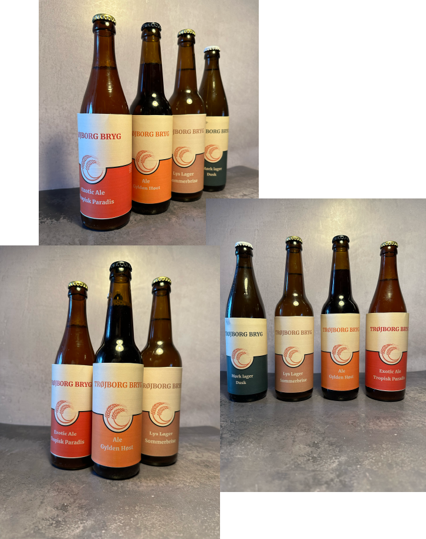
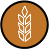
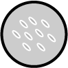
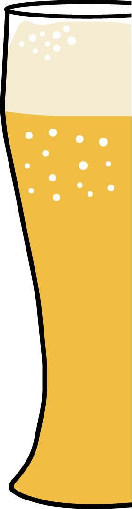
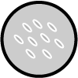
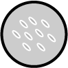
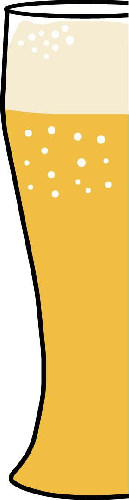
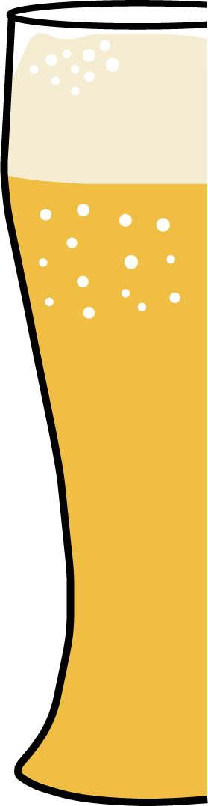

Velkommen til TrøjborgBryg - Oplev Ægte Smag uden Alkohol!

TrøjborgBryg byder dig velkommen til en verden af autentisk ølsmag uden alkohol. Vi er dedikerede til at levere den bedste oplevelse for alle, der ønsker at nyde den klassiske ølsmag uden bekymringen om alkoholindholdet. Udforsk vores udvalg og opdag, hvorfor vores alkoholfri øl er det ultimative valg.
Hover me!



Humle
Humlen spiller en afgørende rolle i skabelsen af en afbalanceret øl og bidrager med aromaer, bitterhed, duften og smagen.
Byg
Byg er øllets rygrad. Byg maltes i en proces, hvor værdifulde dele af kornet vækkes til live for at skabe smag og farve i øllen.
Vand
Øl er 90% vand. Mineralerne i vand tilføjer karakter. Forskellige typer vand påvirker brygningsprocessen og smagen af øllen.
Gær
Gær er afgørende for øllets smag. Gær er det magiske element. En levende mikroorganisme, der er nøglen til konsistens i øl. Den omdanner sukker til alkohol.
Andre Ingredienser
Hos Trøjborg Bryg udforsker vi en verden af ingredienser for at tilføje kompleksitet til vores øl. Enhver kulhydrat (ud over malt) betragtes som en tilsætning i bryggeverdenen. Eksempler inkluderer ris, majs, tørret frugt og krydderier.
 

 
